Project 4: Neural Radiance Field!
Part 0: Calibrating Your Camera
We will first solve for the camera instrinsics of the smartphone that will be used to capture images for our NeRF. To do this we will use the following calibration pipeline:
- Loop through all your calibration images
- For each image, detect the ArUco tags using OpenCV's ArUco detector
- Extract the corner coordinates from the detected tags
- Collect all detected corners and their corresponding 3D world coordinates (you can consider the ArUco tag as the world origin and define the 4 corners' 3D points relative to that, e.g., if your tag is 0.02m × 0.02m, the corners could be [(0,0,0), (0.02,0,0), (0.02,0.02,0), (0,0.02,0)])
- Use cv2.calibrateCamera() to compute the camera intrinsics and distortion coefficients
Here is a sample of four of the calibration images from a set of 40 captured from our smartphone:


Next, we'll capture images of an object next to a single ArUco tag. Here is a sample of 2 of these images from a captured set of 41:
Finally, we can use our camera calibration to solve for the camera poses that explain the position of marker points in screenspace, for each of the 41 caputred images. Here are 2 screenshots of camera frustums visualized in Viser:
Tag-size set to 0.02mm for image(s) visibility
Camera frustum visualization (tag-size=0.1mm; angle 1)
Camera frustum visualization (tag-size=0.1mm; angle 2)
After undistorting the images (because NeRF assumes a perfect pinhole camera model without distortion), we'll build our image poses into a dataset of the following keys to later train our NeRF with:
- images_train: numpy array of shape (N_train, H, W, 3) containing your undistorted training images (0-255 range, will be normalized when loaded)
- c2ws_train: numpy array of shape (N_train, 4, 4) containing the camera-to-world transformation matrices for training images
- images_val: numpy array of shape (N_val, H, W, 3) for validation images
- c2ws_val: numpy array of shape (N_val, 4, 4) for validation camera poses
- c2ws_test: numpy array of shape (N_test, 4, 4) for test camera poses (used for novel view rendering)
- focal: float representing the focal length from your camera intrinsics (assuming fx = fy)
Part 1: Fit a Neural Field to a 2D Image
Neural Radiance Field (NeRF) represent a 3D space. But before jumping into 3D, let's first get familar with NeRF (and PyTorch) using a 2D example. In this section, we will create a neural field that can represent a 2D image and optimize that neural field to fit this image. More specifically, we create an Multilayer Perceptron (MLP) network with Sinusoidal Positional Encoding (PE) that takes in the 2-dim pixel coordinates, and output the 3-dim pixel colors. We will start with the following image of a (real life) fox:

Multilayer Perceptron (MLP): An MLP is simply a stack of non linear activations (e.g., torch.nn.ReLU() or torch.nn.Sigmoid()) and fully connected layers (torch.nn.Linear()). We will be building an MLP with the structure in the figure below. Note that we have a Sigmoid layer at the end of the MLP to constrain the network output be in the range of (0, 1), as a valid pixel color.

Sinusoidal Positional Encoding (PE): PE is an operation that applies a serious of sinusoidal functions to the input cooridnates, to expand its dimensionality. Note we also additionally keep the original input in PE, so the complete formulation is:
\[PE(x) = \{x, \sin(2^0\pi x), \cos(2^0\pi x), \sin(2^1\pi x), \cos(2^1\pi x), ..., \sin(2^{L-1}\pi x), \cos(2^{L-1}\pi x)\}\]
To deal with GPU memory limits, we will use a dataloader to randomly sample N pixels at every iteration for training.
Along with the MLP network and the dataloader, we define a loss function and optimizer as follows: we will use PSNR, derived from mean squared error loss (MSE) between the predicted color and groundtruth color, and the network with be trained using Adam with a learning rate of 1e-2. We will train for 1000 iterations with a batch size of 10k. PSNR is defined as follow:
\[PSNR = 10 \cdot \log_{10}\left(\frac{1}{MSE}\right)\]
The model of the above specification yilded the above images when each pixel location was ran through the model. Each predicted image is the result of one model with varying values of L in [4, 10, 12] and layer_width in [128, 256, 512]:


By visual inspection, we achieve a result nearest to the input when we set the hyperparameters L = 10 and layer_widh = 256. Let us proceed with these discovered values to reconstruct this image of our stitched fox from before, plotting predictions at training progression, as well as the PSNR curve:

| Reconstruction at Iteration 0 | Reconstruction at Iteration 100 | Reconstruction at Iteration 200 |
|---|---|---|
 |
 |
 |
| Reconstruction at Iteration 300 | Reconstruction at Iteration 400 | Reconstruction at Iteration 500 |
 |
 |
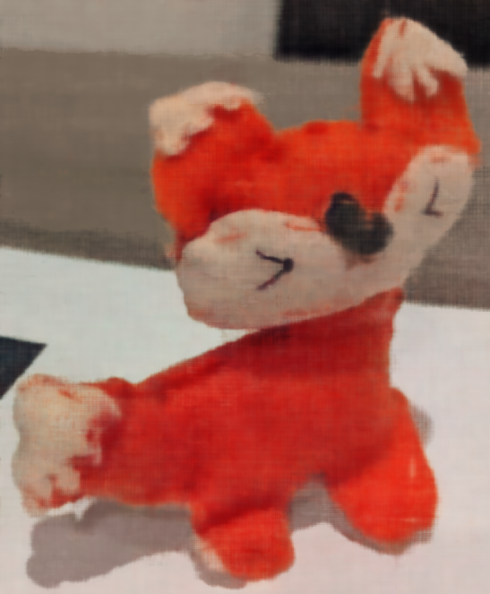 |
| Reconstruction at Iteration 600 | Reconstruction at Iteration 700 | Reconstruction at Iteration 800 |
 |
 |
|
| Reconstruction at Iteration 900 | Reconstruction at Iteration 1000 | Original |
 |
Part 2: Fit a Neural Radiance Field from Multi-view Images
Now that we are familiar with using a neural field to represent a image, we can proceed to a more interesting task that using a neural radiance field to represent a 3D space, through inverse rendering from multi-view calibrated images. For this part we are going to use the Lego scene from the original NeRF paper, but with lower resolution images (200 x 200) and preprocessed cameras (downloaded from here). The following code can be used to parse the data. The figure on its right shows a plot of all the cameras, including training cameras in black, validation cameras in red, and test cameras in green.

NeRF tractor cameras plot
Part 2.1: Create Rays from Cameras
Camera to World Coordinate Conversion. The transformation between the world space \(\mathbf{X_w} = (x_w, y_w, z_w)\) and the camera space \(\mathbf{X_c} = (x_c, y_c, z_c)\) can be defined as a rotation matrix \(\mathbf{R}_{3\times3}\) and a translation vector \(t\):
\[\begin{align} \begin{bmatrix} x_c \\ y_c \\ z_c \\ 1 \end{bmatrix} = \begin{bmatrix} \mathbf{R}_{3\times3} & \mathbf{t} \\ \mathbf{0}_{1\times3} & 1 \end{bmatrix} \begin{bmatrix} x_w \\ y_w \\ z_w \\ 1 \end{bmatrix} \end{align}\]
in which \(\begin{bmatrix} \mathbf{R}_{3\times3} & \mathbf{t} \\ \mathbf{0}_{1\times3} & 1 \end{bmatrix}\) is called world-to-camera (w2c) transformation matrix, or extrinsic matrix. The inverse of it is called camera-to-world (c2w) transformation matrix.
Pixel to Camera Coordinate Conversion. Consider a pinhole camera with focal length \((f_x, f_y)\) and principal point \((o_x = \text{imageWidth} / 2, o_y = \text{imageHeight} / 2)\), it's intrinsic matrix \(\mathbf{K}\) is defined as:
\[\begin{align}\mathbf{K} = \begin{bmatrix} f_x & 0 & o_x \\ 0 & f_y & o_y \\ 0 & 0 & 1 \end{bmatrix} \end{align}\]
which can be used to project a 3D point \((x_c, y_c, z_c)\) in the camera coordinate system to a 2D location \((u, v)\) in pixel coordinate system:
\[\begin{align} s \begin{bmatrix} u \\ v \\ 1 \end{bmatrix} = \mathbf{K} \begin{bmatrix} x_c \\ y_c \\ z_c \end{bmatrix} \end{align}\]
in which \(s=z_c\) is the depth of this point along the optical axis.
Pixel to Ray. A ray can be defined by an origin vector \(\mathbf{r}_o \in \mathbb{R}^3\) and a direction vector \(\mathbf{r}_d \in \mathbb{R}^3\). In the case of a pinhole camera, we want to know the \(\{\mathbf{r}_o, \mathbf{r}_d\}\) for every pixel \((u, v)\). The origin \(\mathbf{r}_o\) of those rays is easy to get because it is just the location of the camera in world coordinates. For a camera-to-world (c2w) transformation matrix \(\begin{bmatrix} \mathbf{R}_{3\times3} & \mathbf{t} \\ \mathbf{0}_{1\times3} & 1 \end{bmatrix}\), the camera origin is simply the translation component:
\[\begin{align} \mathbf{r}_o = \mathbf{t} \end{align}\]
To calculate the ray direction for pixel \((u, v)\), we can simply choose a point along this ray with depth equal to 1 (\(s=1\)) and find its coordinate in world space \(\mathbf{X_w} = (x_w, y_w, z_w)\) using your previously implemented functions. Then the normalized ray direction can be computed by:
\[\begin{align} \mathbf{r}_d = \frac{\mathbf{X_w} - \mathbf{r}_o}{||\mathbf{X_w} - \mathbf{r}_o||_2} \end{align}\]
In Part 1, we have done random sampling on a single image to get the pixel color and pixel coordinates. Here we can build on top of that, and with the camera intrinsics & extrinsics, we can convert the pixel coordinates into ray origins and directions. Since we have multiple images now, we will sample N rays by first sampling M images, and then sample N // M rays from every image.
After having rays, we also need to discritize each ray into samples that live in the 3D space. The simplist way is to uniformly create some samples along the ray (t = np.linspace(near, far, n_samples)). For the Lego scene that we have, we can set near=2.0 and far=6.0. The actually 3D corrdinates can be accquired by \(\mathbf{x} = \mathbf{r}_o + \mathbf{r}_d * t\). However this would lead to a fixed set of 3D points, which could potentially lead to overfitting when we train the NeRF later on. On top of this, we want to introduce some small perturbation to the points only during training, so that every location along the ray would be touched upon during training. We will achieve this by sampling a random location between each sampling interval along a ray like so: t = t + (np.random.rand(t.shape) * t_width) where t is set to be the start of each interval. We will set n_samples to 32 for this initial Lego NeRF.
Part 2.3: Putting the Dataloading All Together
Similar to Part 1, we will write a dataloader that randomly sample pixels from multiview images. What is different with Part 1, is that now we will convert the pixel coordinates into rays in our dataloader, and return ray origin, ray direction and pixel colors from your dataloader. Here are some visualizations of this sampling code:
Plot of the cameras, rays, and samples in 3D.

Rays sampled only from one camera; rays stay within the camera frustum.
| Single camera | Single camera (alt. perspective) | Upper-left single camera |
|---|---|---|
 |
 |
 |
Part 2.4: Neural Radiance Field

After having samples in 3D, we want to use the network to predict the density and color for those samples in 3D. Hence, we will create an MLP that is similar to Part 1, but with three changes:
- Input is now 3D world coordinates instead of 2D pixel coordinates, along side a 3D vector as the ray direction. And we are going to output not only the color, but also the density for the 3D points. In the radiance field, the color of each point depends on the view direction, so we are going to use the view direction as the condition when we predict colors. Note we use Sigmoid to constrain the output color within range (0, 1), and use ReLU to constrain the output density to be positive. The ray direction will also be encoded by positional encoding (PE) but can use less frequency (e.g., L=4) than the cooridnate PE (e.g., L=10).
- This MLP is deeper. We are now doing a more challenging task of optimizing a 3D representation instead of 2D. So we need a more powerful network.
- Injection of the input (after PE) to the middle of the MLP through concatenation. It's a general trick for deep neural network, that is helpful for it to not forgetting about the input.
Part 2.5: Volume Rendering
Next, given a set of RGB+Depth predictions for all values along a ray, how do we predict the RGB value corresponding to that ray when rendering from some view? For this, we will utilize discrete approximation of the volume rendering equaiton:
\[\begin{align} \hat{C}(\mathbf{r})=\sum_{i=1}^N T_i\left(1-\exp \left(-\sigma_i \delta_i\right)\right) \mathbf{c}_i, \text { where } T_i=\exp \left(-\sum_{j=1}^{i-1} \sigma_j \delta_j\right) \end{align}\]
where \(\mathbf{c}_i\) is the color obtained from our network at sample location \(i\), \(T_i\) is the probability of a ray not terminating before sample location \(i\), and \(1 - e^{-\sigma_i \delta_i}\) is the probability of terminating at sample location.
To train this model, we use 1000 gradient steps, a batchsize of 10K rays per gradent step, an Adam optimizer with a learning rate of 5e-4. PSNR between the actual pixel values in the training set and the volume rendered pixel values computed from the model sample points is used for loss. The model with implemented with the PyTorch librairy.
Similar to how before where we were learning the "field" that best explained all the RGB values, we are now learning the radiance field that best explains how each of the ray sample points are being added up to produce each pixel in our training set.
2.6: Rendering


| Lego Loss Plot | Lego Val PSNR Plot |
|---|---|
 |
 |

This NeRF reached a validation PSNR of 22.31 in gradient_steps=3000. Other specifications include:
loss_fn = MSELoss
near=0.0, far=6.0,
batch_size=10000,
n_samples_per_ray=32
Train NeRF on [our] Lafufu data
Next, I trained a lafufu NeRF that reached PSNR 20.48 dB in gradient_steps=2400. Other specifications include:
loss_fn = MSELoss
near=0.02, far=0.5,
batch_size=10000,
n_samples_per_ray=64
I choose near/far through trial and errror, loss function is as before, batch_size is aslo the same. Number of samples per ray has increased. This is because we have less training data; mor samples per ray can help keep the quality of the reconstruciton up in spite of this.


{kind=link}
{kind=link}
{kind=link}
{kind=link}
{kind=link}
{kind=link}
{kind=link}
{kind=link}
{kind=link}
{kind=link}
{kind=link}
{kind=link}
{kind=link}
{kind=link}
.gif){kind=link}
{kind=link}
| Lafufu Loss Plot | Lego Val PSNR Plot |
|---|---|
 |
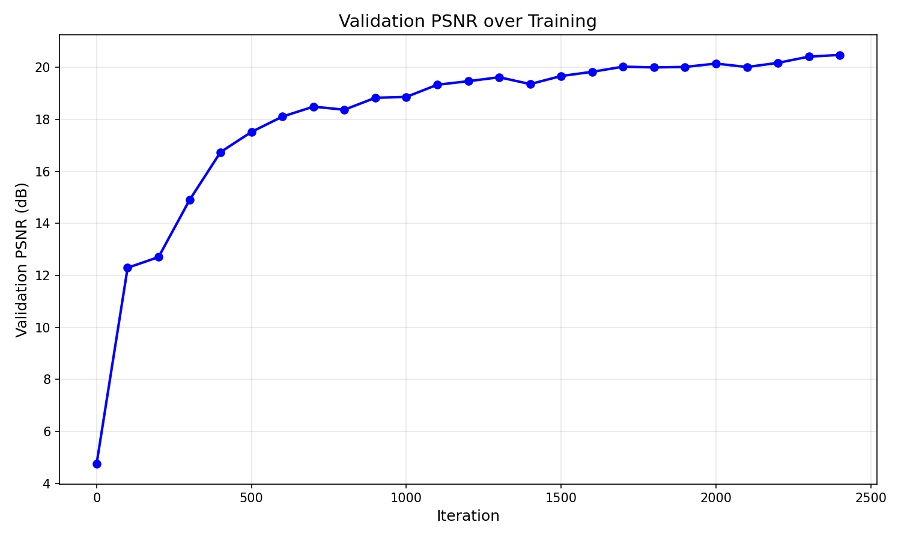 |
{kind=link}
Train NeRF on stitched fox data
Next, I trained a lafufu NeRF that reached PSNR 20.82 dB in gradient_steps=3000. Other specifications include:
loss_fn = MSELoss
near=0.02, far=0.5,
batch_size=10000,
n_samples_per_ray=64
This training session saw success when rendering from training and validation poses as seen in the below examples:
| 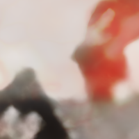 | 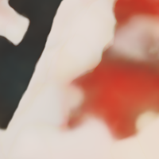 | 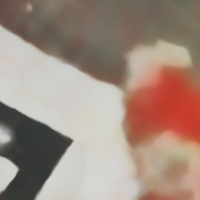 | 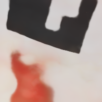 | 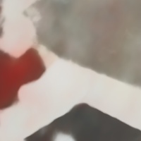 | 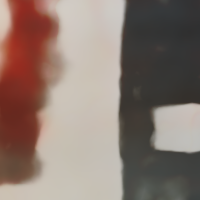 | 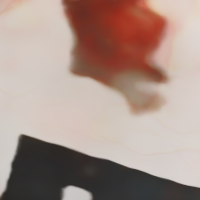 | 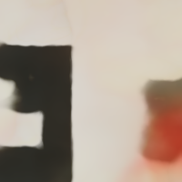 |
| 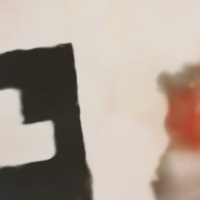 |  |
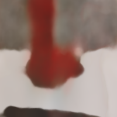 | 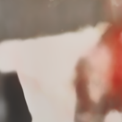 | 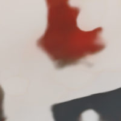 | 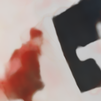 | 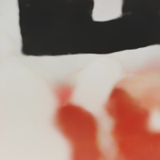 | 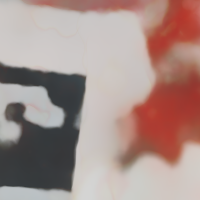 |
| 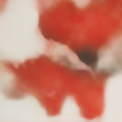 | 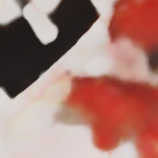 | 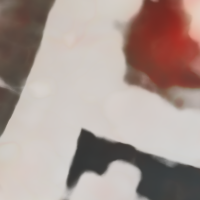 | 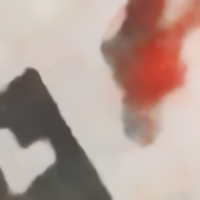 | 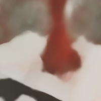 | 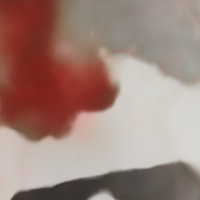 | ||
{kind=link}
{kind=link}
{kind=link}
{kind=link}
{kind=link}
{kind=link}
{kind=link}
{kind=link}
{kind=link}
{kind=link}
{kind=link}
{kind=link}
{kind=link}
{kind=link}
{kind=link}
{kind=link}
{kind=link}
{kind=link}
{kind=link}
{kind=link}
{kind=link}
However, we struggled to find a pose to rotate the view around the origin about that would create consistently accurate novel views, suggesting that there was perhaps serious overfitting to training data while novel views struggled. See one such attempt below:
The PSNR plots are exlcuded for this run as the author forgot to save this plot and is now out of Colab credits to do so (@Google please approve my student status :/ ).
{kind=link}
NeRF or nothing as the kids say.